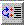
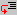
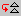
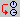

When simulation is stopped early (because a breakpoint was reached following a Pause) a number of commands become available in the Simulation menu. These are described below. (The icon next to each command can be used to activate this command from the simulation tool bar.)
This command resumes simulation that was halted at a breakpoint. Simulation will proceed until completed, or until another breakpoint is reached.

This command causes simulation to step from the current breakpoint until the specified line.

This command causes simulation to step into the procedure before which execution was halted by a breakpoint. This procedure can then be executed step-by-step.
This command causes simulation to step over the procedure before which execution was halted by a breakpoint. The procedure is completely executed and simulation then moves on to the next procedure.

Step Out finishes execution of the current procedure (previously entered using the Step Into command). The simulator then steps out of the procedure and stops. (This command is the equivalent of the GDB “finish” command.)

This command causes the simulator to execute all of the processes up to an event that is due to take place in the next delta (simulation) cycle, or up to the next breakpoint, whichever comes first.
This command causes simulation to progress in the current process until the next process is run or woken up.

This command causes the simulator to advance to the next time cycle or to the next breakpoint, whichever comes first.